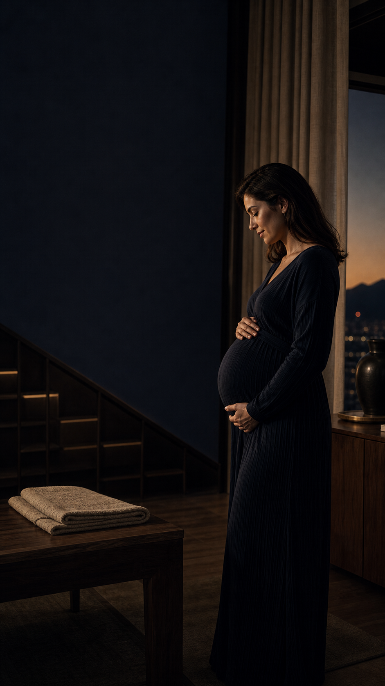
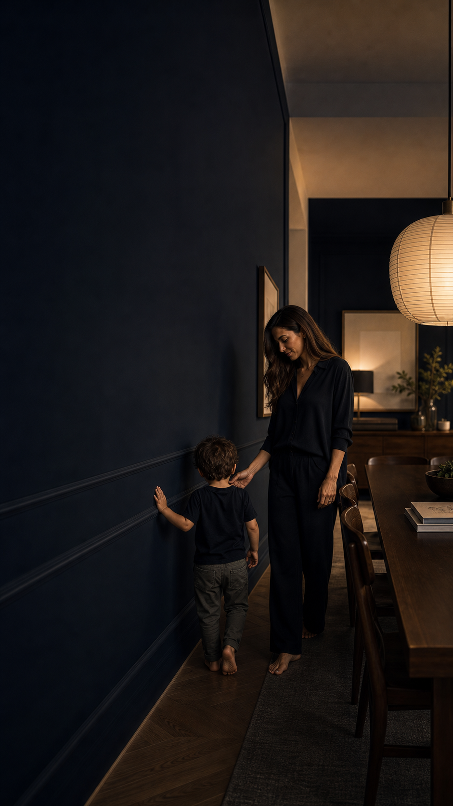
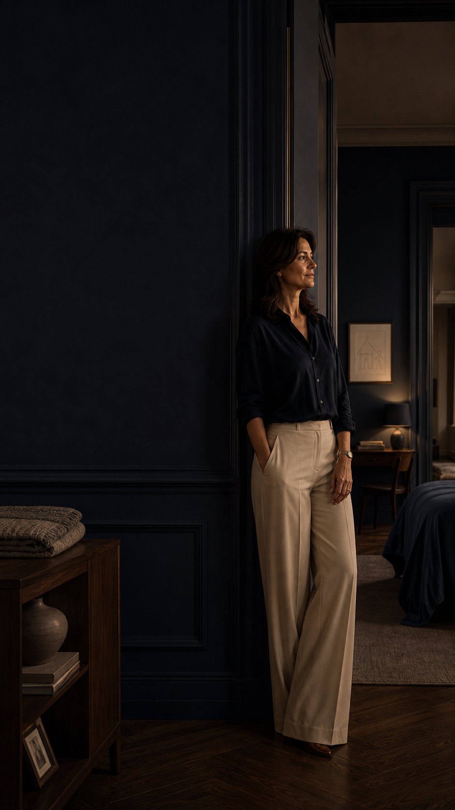
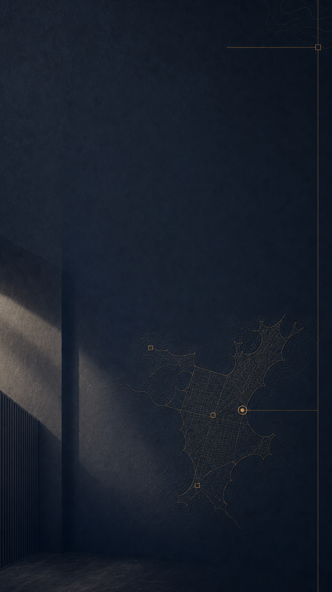
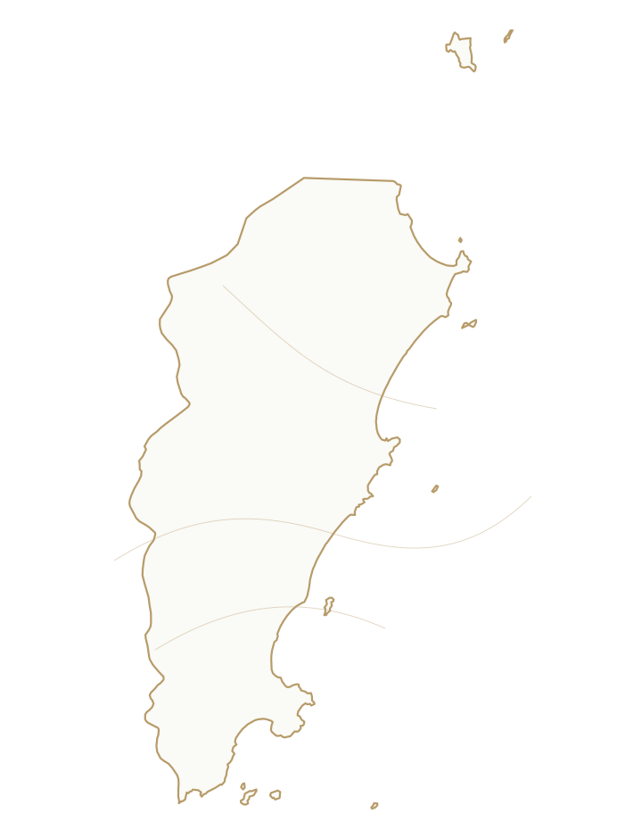

Dia das mães
Antes de chegar, você já morava nela.
Toda mãe prepara uma casa antes de conhecer o rosto que vai transformá-la.

Toda mãe prepara uma casa antes de conhecer o rosto que vai transformá-la.

Passos pequenos, noites longas, mesa cheia. O lar muda junto com quem a gente ama.

Quando os filhos ganham mundo, a casa guarda o que ensinou.
Depois de cuidar de tantos começos, ela também merece escolher a próxima fase.


Às mulheres que transformam paredes em memória, rotina em cuidado e escolhas em futuro.